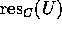
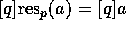

As we have seen, factoring out the submodule  we don't cut off more
infomation as is contained in the collection of all Grothendieck
groups for fields. However, we can save additional informations,
that is, factoring out some proper submodule of
we don't cut off more
infomation as is contained in the collection of all Grothendieck
groups for fields. However, we can save additional informations,
that is, factoring out some proper submodule of  instead of
instead of  if it remains
possible to define global decomposition numbers in the corresponding
quotient of
if it remains
possible to define global decomposition numbers in the corresponding
quotient of  . We now give the definition of such a one.
. We now give the definition of such a one.
For each isomorphism class of cyclic R-modules there is a well defined map to each given by the isomorphism class of the kernel of the map
where I is the ideal in R such that R/I is of isomorphism type
C. Thus  is just the isomorphism class of the R-modul
IU. It is easily seen that maps short split exact
sequences to short split exact sequences, such that it induces
an additive map on  which we denote by the same symbol.
Now, if we take for U a right A-module M, then of course
is again a right A-module. Therefore one obtains
a similar additive map
which we denote by the same symbol.
Now, if we take for U a right A-module M, then of course
is again a right A-module. Therefore one obtains
a similar additive map  for which we will
use the same symbol as well and call it the C-residuum map.
We write for iterating i times and define
for which we will
use the same symbol as well and call it the C-residuum map.
We write for iterating i times and define
These are of course abelian subgroups of  as the intersection
of preimages of
as the intersection
of preimages of  under the additive maps
under the additive maps  . Later on,
we will see that they in fact are
. Later on,
we will see that they in fact are  -submodules in the case where
R is a principle ideal domain. But in general this is not true.
-submodules in the case where
R is a principle ideal domain. But in general this is not true.
We now define inductively a descending chain of  -submodules. The definition
of
-submodules. The definition
of  has been given.
For i>1 let be the submodule of generated
by . Set
has been given.
For i>1 let be the submodule of generated
by . Set
Let us illustrate this in the case of a principle ideal domain.
Then is of the form F=R/(p) for a prime p, that
is, [F]=[p] in the above introduced notation. We write for short. Since  is generated by
is generated by  as a
as a
 -module we only need to calculate for prime powers
-module we only need to calculate for prime powers 
The p-residuum of 1 and 0 is obviously 1 resp. 0. This, together
with (1) shows that is multiplicative, i.e.\
for resp.\
 . Therefore, the are submodules in
. Therefore, the are submodules in  as mentioned above, and it follows
. This means that an element
as mentioned above, and it follows
. This means that an element  is zero in
is zero in  , iff for all
, iff for all  and all primes you have . Here has to be defined
as the identity map.
and all primes you have . Here has to be defined
as the identity map.
From (1) and (3) it is easy to see that
 if  . Therefore,
implies for all primes q
if a is assumed to lie in
. Therefore,
implies for all primes q
if a is assumed to lie in  . This shows
. This shows
It should be remarked that is not multiplicative in general. As an example, take the ring of Laurent polynomials in the indeterminant x which is important in the context of Hecke algebras, q-Schur algebras, Birman-Murakami-Wenzl algebras, etc. Let be the Galois field to the prime with R-module structure given by the natural projection. In the same manner, and are considered as R-modules. Then you have , , and since it follows